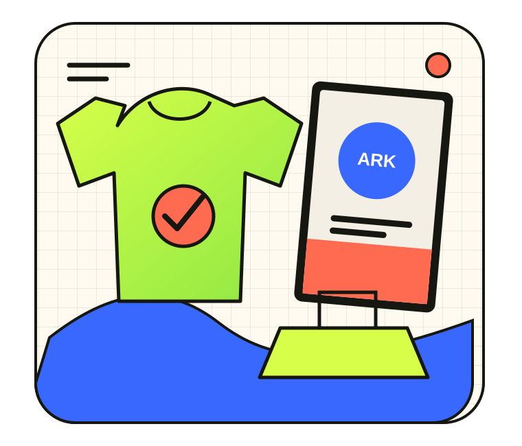

Commerce & ranges
Trade in textiles, clothing, accessories and lifestyle products, brought together with a coherent point of view.
Zurich · Commerce & brands
Novic Ark Brands connects textiles, clothing, accessories and lifestyle products with online commerce, design, content creation and brand building.

What we connect
Trade in textiles, clothing, accessories and lifestyle products, brought together with a coherent point of view.
Building and operating digital storefronts so offers can be presented clearly and reached online.
Marketing, design, content creation and brand building for a consistent, recognisable presence.
Novic Ark Brands
A versatile approach for businesses and products that need not only an offer, but also clear positioning and a contemporary presentation.
Contact
Connect with Aleksandar Novic on LinkedIn and start an informal conversation about your project.